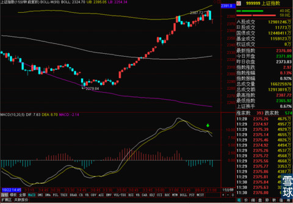
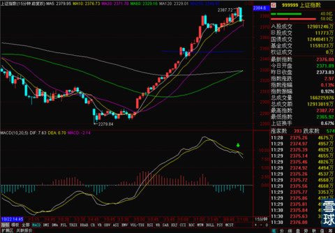
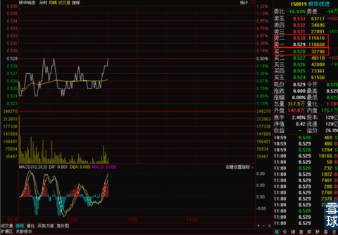
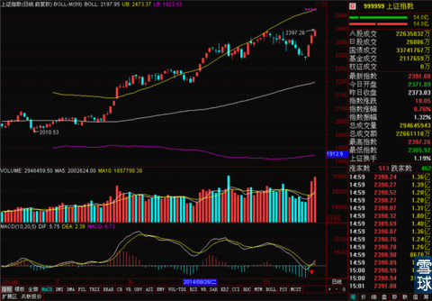
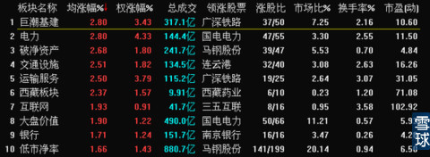
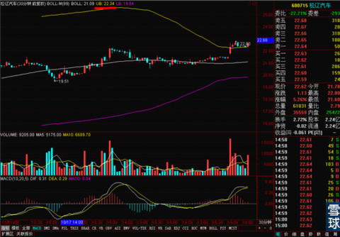
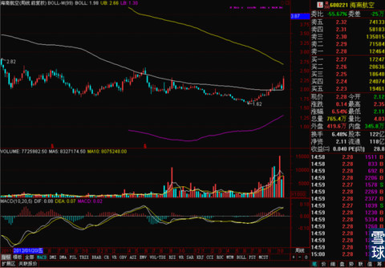

美联储今天正式结束QE3，昨天美股小幅收跌。今天早上上证也小幅低开。但是上午整体走势和昨天的预测一致，基本是波动性的横盘。下午走势可能会不是很好，因为5分钟线上出现了顶背离，15分钟线上的MACD也没有翻出金叉。下午稍微有点不乐观。

但是同时我们也可以看到15分钟线临近中午的那个下跌，也是在MA20位置出现反弹，暂时这个支撑位还有效，估计下午也不会跌太多。

大家控制好仓位，暂时观望一下就好。
上午有一笔操作，就是在0.526和0.528两个价位把手里所有的银华锐进出清了。之前的成本是0.528，后来在0.512附近补了一笔仓。从昨天到今天上午，不仅把之前的亏损补上了，还小幅盈利了一点点。鉴于周线BOLL中轨0.529这个价位今天久攻不下。而且盘中每到0.529附近都巨量的抛盘压制，所以暂时出局观望。
0.529这个关键价位有3-4倍于0.528这个价位的买卖盘比例，所以小心起见。就不留着等突破了，持币观察一下，等站稳0.529之后再买回来。

在雪球的模拟仓里，本来想实时买卖给大家看一下，但是一不小心点错，点成了买入。后来都修改过来了。提醒大家一下，别把那个错误的买入误导了。
日线上看，MACD的0轴附近金叉出现了，虽然这个金叉的效果有待进一步确认，但是暂时技术分析上还没有太大的风险因素，我还是比较期望这次能通过在0轴附近横向调整化解之前顶背离带来的压力。
至于退出QE3的消息，大家也不用太担忧，毕竟退出QE3是早就定下来的时期，市场对这个消息还是有充分心理准备的。而且退出QE3除了对外资的流向有一定直接作用，深层次来说，还是美国经济复苏迹象明显才可能彻底退出QE3，总得来说，不算是个坏消息。
------------------------------------------上下午的分割线------------------------------------------------
下午的走势和预测的不太一样，中午收盘之后我觉得下午可能会下跌，但是跌幅不大，到开盘价附近就企稳，之后横盘。但是实际情况是下午有一波大涨，之后又回撤了。上午提到了MACD在日线0轴位置出现了金叉，现在这个金叉的幅度进一步加大，对大盘后续走势有一定好处，但是不完全排除金叉再翻下去的可能，虽然我个人是期望这个金叉能消化之前的MACD日线顶背离，不过目前还不能到有效确认说，之前的压力已经被完全化解的地步。

今天下午对大盘贡献最大的是电力股和银行股。尤其是银行，从7月以来的这一轮行情，每次波动中能不能持续上涨的关键因素都在金融类股票上，最近这几天先是证券活跃，现在银行也跟进了。这算是个好的预兆吧。

关于今天的操作，我上午的时候把所有的银华锐进都卖了，价位是0.526和0.528 。今天银华锐进最后的收盘价还是没站稳0.529，收在了0.526，所以暂时来看，这笔卖出虽然没卖出这两天里的高价，但是总体还是合理的。
下午买了一笔松辽汽车博超短线，买入价位是照着30分钟线BOLL上轨确定的。

鉴于松辽汽车上涨趋势还不错，重组之后可能还有题材进一步发酵。而且技术指标都还不错，所以博一下超短线，预计持有不超过周一，目标是盈利3-5%，如果明天跌破22.30这个买入价位和BOLL上轨支撑，立马甩卖。目前已经盈利了。
还有恭喜一下之前信任我的推荐买了东方航空和海南航空的小伙伴们，今天涨的不错。大家可以多去挖掘一些这样的股票，只要是在周线级别BOLL得到支撑，而且有过横盘，小幅度逐步放量的，都可以买。拿上几个月绝对不吃亏的。

最后说一下，有人在评论区说打脸了的问题。这个我觉得没什么。本身这个专栏不是什么股评家预测大盘和推荐股票的专栏。这是我个人自己写收盘笔记的地方，收盘笔记的关键是总结不是预测，有预测的部分是分析的需要，总结的就是之前的预期是对还是错。而且这种短期预测我也不是第一次预测错了。错了没什么可怕的，及时调整和修正就好。我见过几个职业做股评的，也见过券商总部的策略分析师。凡是做得好的，没有不敢承认自己错误的。那么死不认错，例如前段时间天天预测大盘，只要一下跌就大喊说要补2267缺口的那个XXX带头大哥，连缺口理论和缺口名称都搞错了。就是死不认错，用新的错误解释老的错误，越解释打脸打的越疼。这种事我是不干的。我只是依照我的技术指标和交易系统，看到什么是什么，有什么说什么而已。写在这里无非是和大家交流讨论以及提供一点参考罢了。
 |
美联储今天正式结束QE3，昨天美SaiLv 2014-10-30 11:57:37 |
Copyright © 1996-2014 SINA Corporation All Rights Reserved.